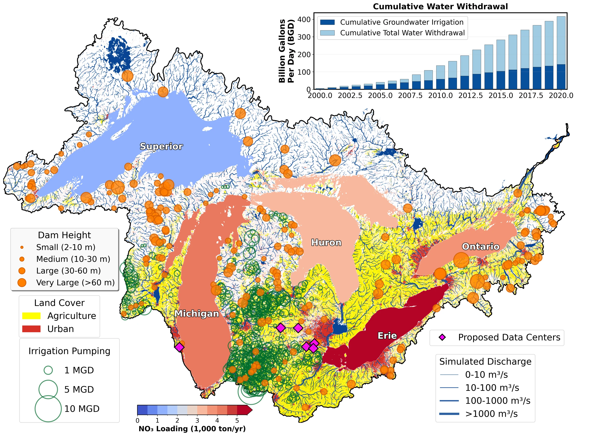

UNITED STATES & CANADA · Selected work
Great Lakes Basin
Mapping river systems, water use, land cover, dams, and emerging infrastructure in a shared basin-scale geospatial view.
Figure 01
An integrated basin-scale water-resources view

Spatial assessment
This integrated Great Lakes Basin visualization brings together simulated river discharge with spatial information on dams, land cover, irrigation pumping, nitrate loading, cumulative water withdrawal, and proposed data-center locations. Combining these datasets in one geospatial framework helps identify where river systems, water use, and infrastructure coexist and provides a foundation for screening basin-scale water-resources questions. The combined view provides a practical baseline for identifying locations where more detailed water-use and infrastructure assessment may be warranted.
CaMa-Flood river discharge · GIS integration · Water demand and infrastructureView full-resolution figure ↗